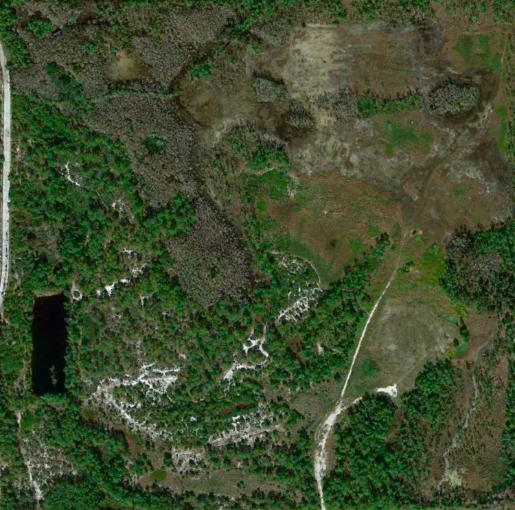
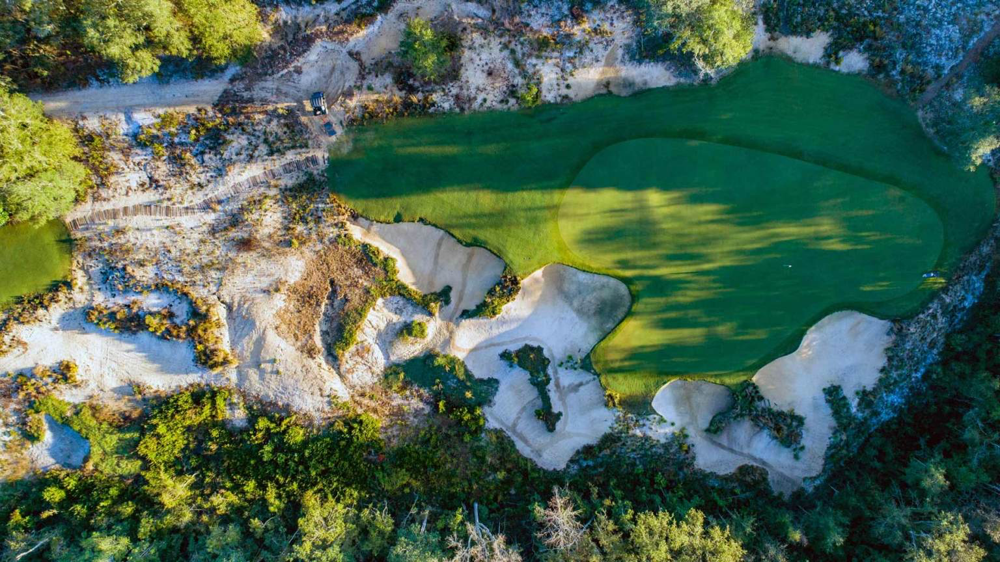

Editor's note: This article was originally written in 2022 when Kinsale was in the design phase. The club opened in November 2024 as a 250-member private club and has since drawn considerable praise. The original text below captures the anticipation surrounding the project.
Gil Hanse and Jim Wagner are expanding their portfolio of new courses with a development outside Naples, Florida.
Developed by Soave Enterprises, Kinsale Golf Club opened in November 2024. The club aims to be the “preeminent” club in Southwest Florida. The course will be laid on an adjacent piece of property to a residential waterfront development also built by Soave. Sitting across the road, it will be enclosed and removed from the visual and spatial stain of surrounding real estate.

The current property, with the design overlaid. (Credit: Google Earth, Kinsale Golf Club)
According to a July 2022 update, the focus of Hanse and Wagner’s design plan will feature classic Macdonald and Raynor template holes, with a “creative twist”. They have made clear that the expectation is not to build “exact replications,” but rather to adapt the central concepts behind each template to the layout of holes on the property.
This decision follows Hanse and Wagner’s work at the recently opened Ballyshear Links in Thailand, which draws from the template design and aesthetic of the extinct Lido Golf Club — and their upcoming restoration assignment at Yale, one of Macdonald and Raynor’s all-time greats. Hanse and Wagner have also restored the MacDonald/Raynor designs in Sleepy Hollow, Creek Club, and Westhampton. There is certainly no shortage of experience from Hanse and Wagner with one of golf architecture’s most storied duos.


Above: Ohoopee Match Club and Pinehurst No.4 (credit Andy Johnson, PJ Koenig)
Akin to Hanse and Wagner’s other work at Ohoopee Match Club and Pinehurst #4, fairways and bunkers will naturally flow into the surrounding natural sandy, pine-straw-strewn landscape of Kinsale’s property. The aesthetic will remain low-profile and subdued, and the developers have indicated everything from the clubhouse to the course will carry an “understated” ambiance. Of no surprise for a Hanse/Wagner project, playability and walkability are also among the core values that the design seeks to employ. These principles have been implemented at nearly every course their hands have touched, from early work at Rustic Canyon, and now to this upcoming project.
“We’re excited to be working with the Soave Team and being afforded the opportunity to create something unique for Naples, Florida. The project goal is to use our natural, classic design philosophy to enhance the beauty of the Kinsale Golf Club property while building a fun and interesting golf challenge for players of all skill levels.”
– GIL HANSE & JIM WAGNER, HANSE GOLF COURSE DESIGN
(CREDIT: KINSALE GOLF CLUB WEBSITE)
It will be interesting to observe the reputation Kinsale acquires, as there are few clubs in the surrounding local area built with the same minimalist ethos. In an area full of cookie-cutter real-estate-centric golf clubs, Kinsale stands as a refreshing counterpoint in the state of Florida.
Read more about the project at Kinsale Golf Club’s website.
Click to view Hanse and Wagner’s design plan here.
{kind=link}